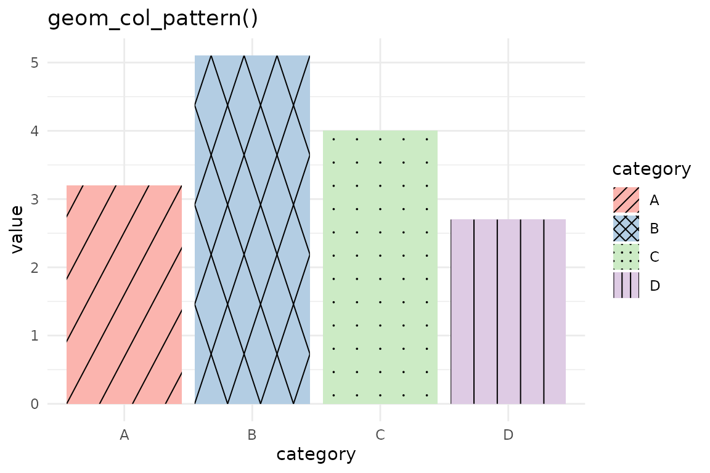
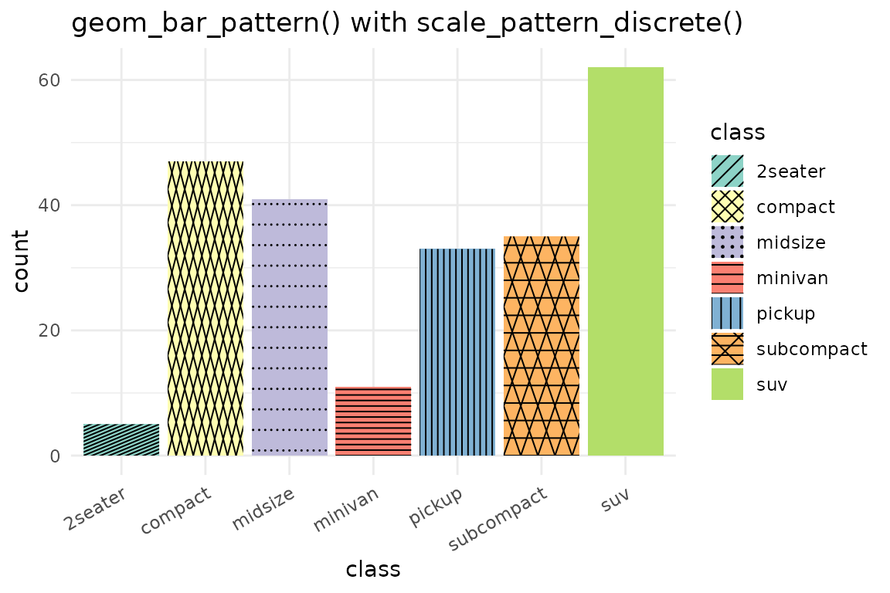
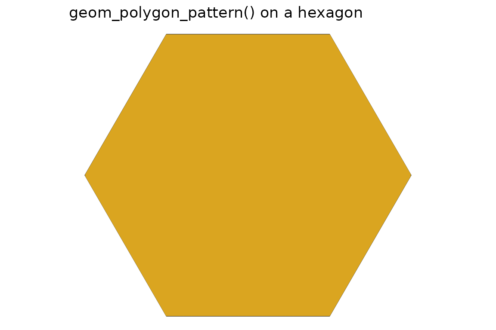
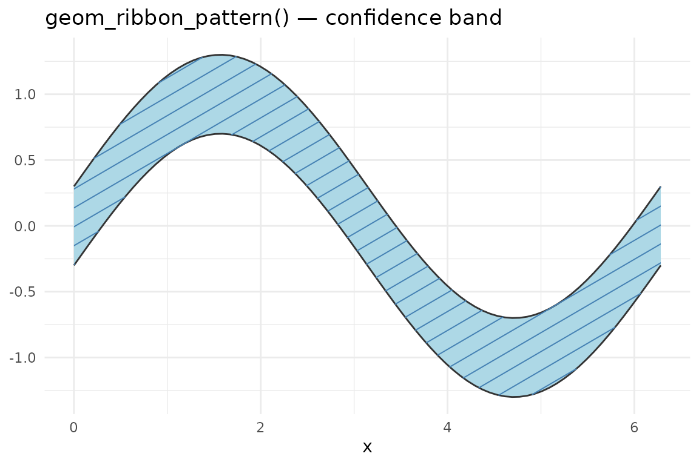
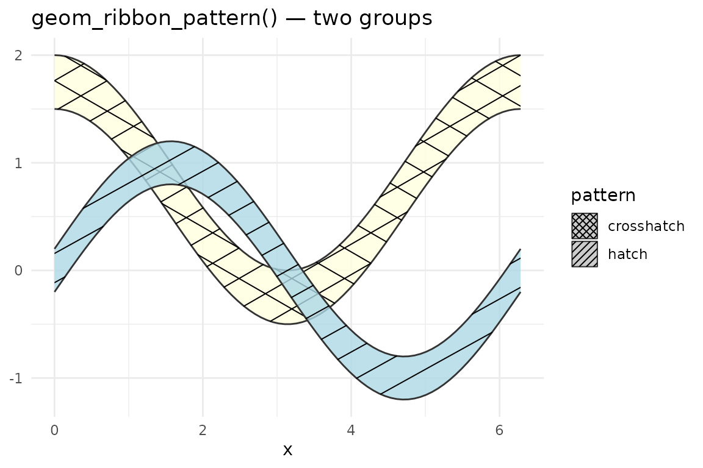
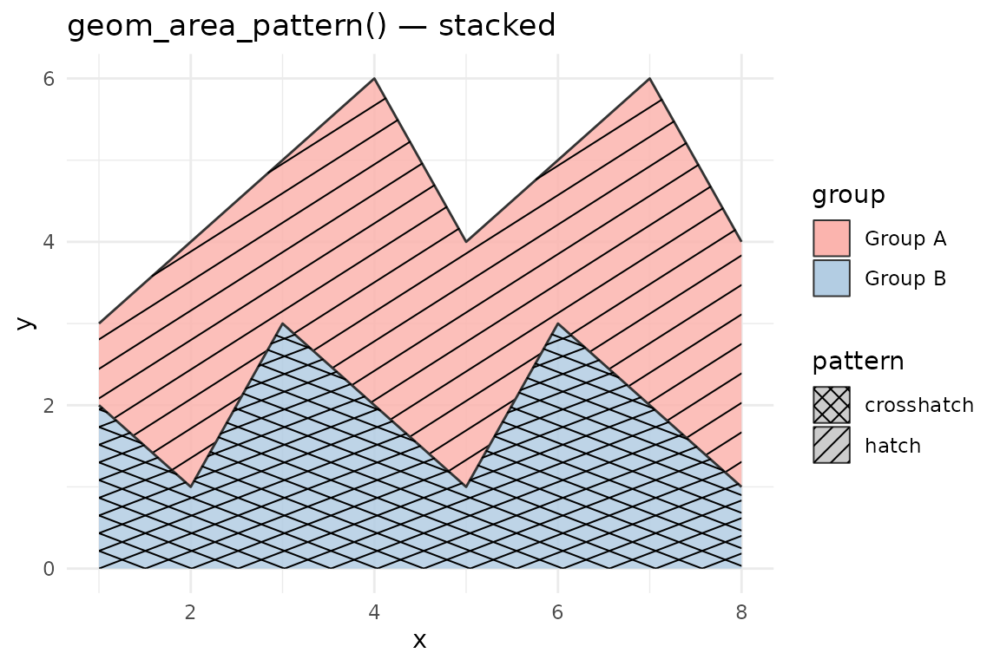

ggpatchy adds a pattern aesthetic to ggplot2 geoms.
Patterns are rendered via native grid graphics — no ImageMagick or
external raster dependencies are required.
Bar and column charts
geom_col_pattern() and geom_bar_pattern()
are drop-in replacements for geom_col() and
geom_bar(). Map pattern to a discrete variable
with scale_pattern_manual() or
scale_pattern_discrete().
df <- data.frame(
category = c("A", "B", "C", "D"),
value = c(3.2, 5.1, 4.0, 2.7)
)
ggplot(df, aes(category, value, fill = category, pattern = category)) +
geom_col_pattern() +
scale_pattern_manual(values = c(
A = "hatch", B = "crosshatch", C = "dots", D = "vertical"
)) +
scale_fill_brewer(palette = "Pastel1") +
theme_minimal() +
labs(title = "geom_col_pattern()")
geom_bar_pattern() uses stat = "count":
ggplot(mpg, aes(class, fill = class, pattern = class)) +
geom_bar_pattern() +
scale_pattern_discrete() +
scale_fill_brewer(palette = "Set3") +
theme_minimal() +
theme(axis.text.x = element_text(angle = 30, hjust = 1)) +
labs(title = "geom_bar_pattern() with scale_pattern_discrete()")
Polygons
geom_polygon_pattern() clips patterns to the exact
polygon boundary, not just the bounding box. This means concave shapes
like crescents or L-shapes are handled correctly.
theta <- seq(0, 2 * pi, length.out = 7)[-7]
hex <- data.frame(x = cos(theta), y = sin(theta))
ggplot(hex, aes(x, y)) +
geom_polygon_pattern(
pattern = "hatch",
fill = "lightyellow",
pattern_colour = "goldenrod",
pattern_angle = 30,
pattern_spacing = 0.07
) +
coord_fixed() +
theme_void() +
labs(title = "geom_polygon_pattern() on a hexagon")
Ribbon charts
geom_ribbon_pattern() adds patterns to confidence bands
or any region defined by ymin and ymax.
x <- seq(0, 2 * pi, length.out = 80)
df <- data.frame(x = x, ymin = sin(x) - 0.3, ymax = sin(x) + 0.3)
ggplot(df, aes(x, ymin = ymin, ymax = ymax)) +
geom_ribbon_pattern(
pattern = "hatch",
fill = "lightblue",
pattern_colour = "steelblue"
) +
theme_minimal() +
labs(title = "geom_ribbon_pattern() — confidence band")
Multiple groups with different patterns:
df2 <- data.frame(
x = c(x, x),
ymin = c(sin(x) - 0.2, cos(x) + 0.5),
ymax = c(sin(x) + 0.2, cos(x) + 1.0),
group = rep(c("sin", "cos"), each = length(x)),
pattern = rep(c("hatch", "crosshatch"), each = length(x)),
fill = rep(c("lightblue", "lightyellow"), each = length(x))
)
ggplot(df2, aes(x, ymin = ymin, ymax = ymax,
group = group, fill = fill, pattern = pattern)) +
geom_ribbon_pattern(alpha = 0.8) +
scale_pattern_identity(guide = "legend") +
scale_fill_identity() +
theme_minimal() +
labs(title = "geom_ribbon_pattern() — two groups")
Area charts
geom_area_pattern() mirrors geom_area(): it
sets ymin = 0 automatically and defaults to
position = "stack".
df3 <- data.frame(
x = rep(1:8, 2),
y = c(1, 3, 2, 4, 3, 2, 4, 3,
2, 1, 3, 2, 1, 3, 2, 1),
group = rep(c("Group A", "Group B"), each = 8),
pattern = rep(c("hatch", "crosshatch"), each = 8)
)
ggplot(df3, aes(x, y, fill = group, pattern = pattern)) +
geom_area_pattern(position = "stack", alpha = 0.85) +
scale_pattern_identity(guide = "legend") +
scale_fill_brewer(palette = "Pastel1") +
theme_minimal() +
labs(title = "geom_area_pattern() — stacked")
Pattern reference
Built-in patterns:
| Name | Description | Respects pattern_angle? |
|---|---|---|
none |
No pattern (fill only) | — |
hatch |
Diagonal lines | Yes |
crosshatch |
Crossed diagonal lines | Yes |
horizontal |
Horizontal lines | No (fixed) |
vertical |
Vertical lines | No (fixed) |
dots |
Regular dot grid | No (fixed) |
weave |
Woven over/under line texture | No (fixed) |
Custom patterns can be registered with
register_pattern().
Known limitations
stat = "identity" with
geom_violin_pattern() requires a violinwidth
column. The default stat ("ydensity") computes
violinwidth automatically from your raw data. If you pass
stat = "identity" with pre-summarised density data, your
data frame must include a violinwidth column (values in [0,
1] giving the normalised half-width at each y level). If
the column is absent, geom_violin_pattern() emits an
informative message and skips that group rather than crashing.
orientation = "y" (horizontal) is not supported
for pattern overlays. geom_violin_pattern(),
geom_ribbon_pattern(), and geom_area_pattern()
all skip the pattern when orientation = "y" or
flipped_aes = TRUE. The base shape still renders correctly.
Use coord_flip() on a vertical geom as a workaround.
Polygon clipping is bounding-box relative: Pattern
spacing and coordinates are computed relative to each polygon’s bounding
box, not the panel viewport. Very thin or elongated shapes (e.g. narrow
violins, skinny ribbon bands) may show denser or sparser patterns than
wide shapes at the same pattern_spacing value.
Non-Cartesian coordinates: Patterns are drawn in
screen (npc) space after coord$transform(). Under
coord_polar or coord_sf the pattern lines
remain straight in screen pixels rather than following the coordinate
curvature.